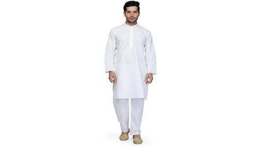

Kurta Pajama
It is one of the most worn traditional attires in many cities in Uttar Pradesh. Kurtas are generally made of cotton, silk, or chiffon and come in a variety of different colours. This attire is paired with a pajama, which is loose and baggy pants. Designer kurtas are worn during grand occasions like marriage and festivals.